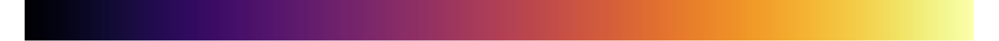

Created by Bonnie Lum, Brittany Kondo, Danielle Smalls, Guia Gali, and Rosa Romero-Gomez
•
Source code
•
Based on
WebGL Globe
,
Calipso dataset from NASA
1990
Tracking Sahara Dust Migration (2006-2014)
Selected month: JUN 2006
Play
Color Legend
